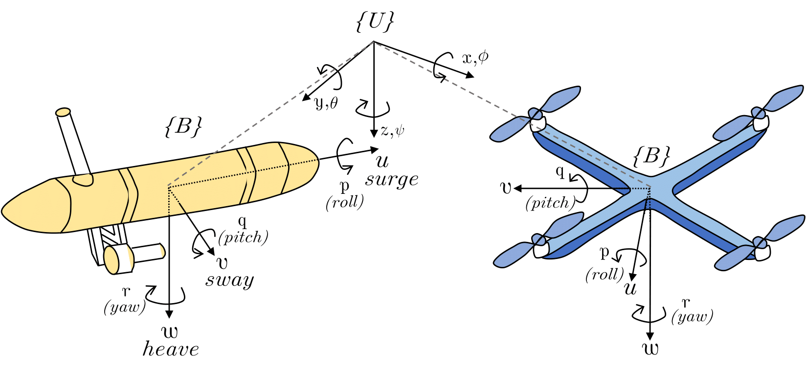

Standards
In this section we describe the standards adopted in the Pegasus system.
Reference Frames
We adopted the NED (North-East-Down) reference frame for the inertial frame and the FRD (Forward-Right-Down) reference frame for the body frame, according to the figure below.
{kind=link}
Exceptions
The only exception to this standard is the information received by the MOCAP system and published by the mocap_interface node, where:
The position of a body-frame (Forward-Left-Up) is expressed relative to an ENU (East-North-Up) inertial frame, in the ENU inertial frame.
The attitude of the body-frame is expressed in the FLU (Forward-Left-Up) format with respect to the ENU inertial frame, in the FLU body frame.
The data published by the mocap_interface is received by the mavlink_interface where it is converted to the NED (North-East-Down) inertial frame with the attitude following the FRD (Forward-Right-Down) of the body with respect to the NED inertial frame. This data is then sent through mavlink to the vehicle micro-controller.
The euler-angles and angle-rates published in the ROS 2 topics are expressed in
degreesanddegrees per second, respectively. This choice was deliberate to facilitate the interpretation of the data by the user when debugging. Therefore, when using the API to send attitude-rate commands, do NOT forget to convert the angle-rates todegrees per second.The position and velocity are expressed in meters and meters per second, respectively.
The attitude (used for control purposes) is expressed using quaternions.
Note that the euler-angles published in the filter topic should not be used for control purposes, but rather the quaternion.
Conversions between frames
We provide the library pegasus_addons/pegasus_utils, which contains two header files frames.hpp and rotations.hpp. These can be used to perform conversions between ENU (East-North-Up) to NED (North-East-Down) and between FLU (Forward-Left-Up) and FRD (Forward-Right-Down). It also provides utility functions to convert angles between radians to degrees, quaternions to euler-angles, and vice-versa.